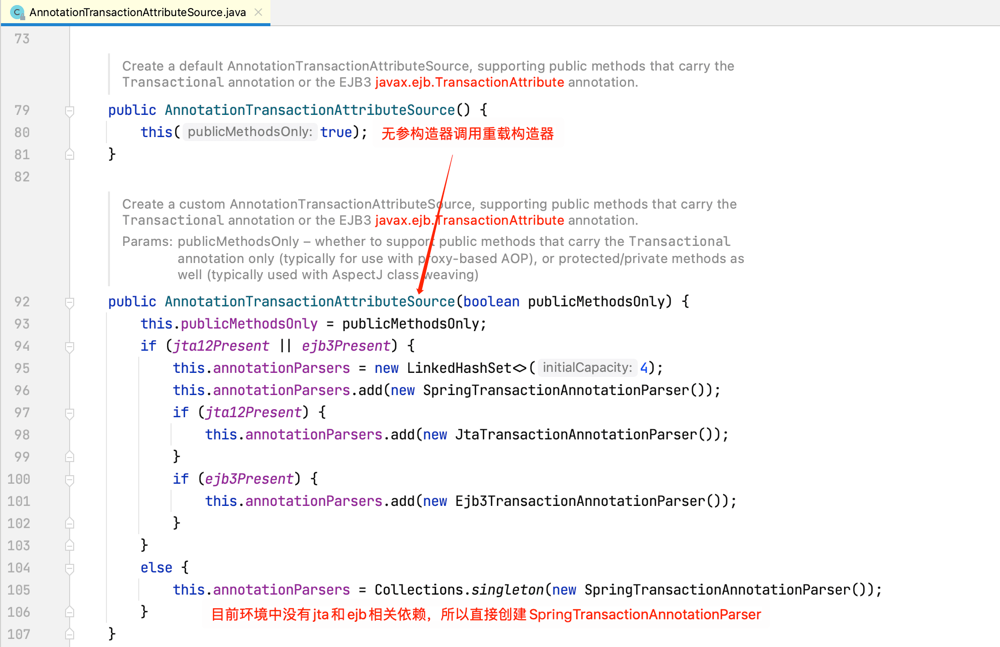
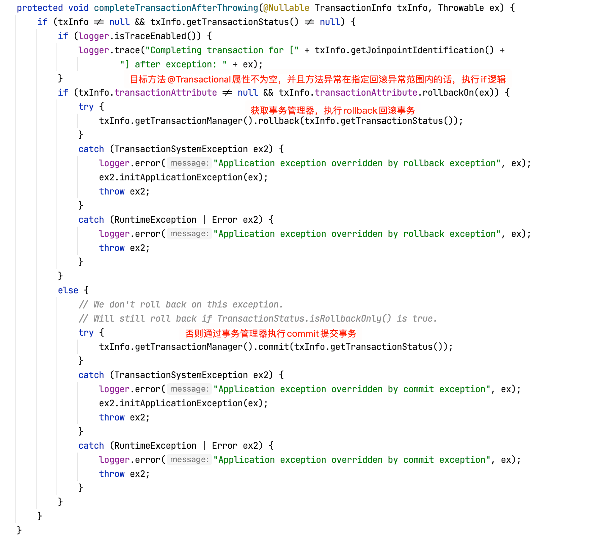

在Spring-事务管理一节中，我们了解了在Spring中如何方便的管理数据库事务，并了解了一些和事务相关的专业术语。本节将通过一个简单的例子回顾Spring声明式事务的使用，并通过源码解读内部实现原理，最后通过列举一些常见事务不生效的场景来加深对Spring事务原理的理解。
事务例子回顾
新建SpringBoot项目，Boot版本2.4.0，然后引入如下依赖：
1 | <dependencies> |
引入了JDBC、MySQL驱动和mybatis等依赖。
然后在Spring入口类上加上@EnableTransactionManagement注解，以开启事务：
1 |
|
接着新建名称为test的MySQL数据库，并创建USER表：
1 | CREATE TABLE `USER` ( |
其中USER_ID字段非空。
在application.properties配置中添加数据库相关配置：
1 | spring.datasource.driver-class-name=com.mysql.cj.jdbc.Driver |
创建USER表对应实体类User：
1 | public class User implements Serializable { |
创建UserMapper：
1 |
|
包含一个新增用户的方法save。
创建Service接口UserService：
1 | public interface UserService { |
其实现类UserServiceImpl：
1 |
|
在SpringBoot的入口类中测试一波：
1 |
|
如果事务生效的话，这条数据将不会被插入到数据库中，运行程序后，查看库表：
可以看到数据并没有被插入，说明事务控制成功。
我们注释掉UserServiceImpl的saveUser方法上的@Transactional注解，重新运行程序，查看库表：

可以看到数据被插入到数据库中了，事务控制失效。
事务原理
@EnableTransactionManagement
上面例子中，我们通过模块驱动注解@EnableTransactionManagement开启了事务管理功能，查看其源码：

接着查看TransactionManagementConfigurationSelector的源码：
所以接下来我们重点关注AutoProxyRegistrar和ProxyTransactionManagementConfiguration的逻辑即可。
AutoProxyRegistrar
查看AutoProxyRegistrar的源码：

查看AopConfigUtils.registerAutoProxyCreatorIfNecessary(registry)源码：
查看InfrastructureAdvisorAutoProxyCreator的层级关系图：

这和深入理解Spring-AOP原理一文中的AnnotationAwareAspectJAutoProxyCreator的层级关系图一致，所以我们可以推断出InfrastructureAdvisorAutoProxyCreator的作用为：为目标Service创建代理对象，增强目标Service方法，用于事务控制。
ProxyTransactionManagementConfiguration
查看ProxyTransactionManagementConfiguration源码：

注册BeanFactoryTransactionAttributeSourceAdvisor增强器，该增强器需要如下两个Bean：
- TransactionAttributeSource
- TransactionInterceptor
注册TransactionAttributeSource：
方法体内部创建了一个类型为AnnotationTransactionAttributeSource的Bean，查看其源码：

查看SpringTransactionAnnotationParser源码：

注册TransactionInterceptor事务拦截器：

查看TransactionInterceptor源码，其实现了MethodInterceptor方法拦截器接口，在深入理解Spring-AOP原理一文中曾介绍过，MethodBeforeAdviceInterceptor、AspectJAfterAdvice、AfterReturningAdviceInterceptor和AspectJAfterThrowingAdvice等增强器都是MethodInterceptor的实现类，目标方法执行的时候，对应拦截器的invoke方法会被执行，所以重点关注TransactionInterceptor实现的invoke方法：
查看invokeWithinTransaction方法源码：
completeTransactionAfterThrowing源码如下：

这里，假如没有在@Transactional注解上指定回滚的异常类型的话，默认只对RunTimeExcetion和Error类型异常进行回滚：
commitTransactionAfterReturning源码如下：
debug验证
重新打开UserServiceImpl的saveUser方法上的@Transactional注解，然后在如下所示位置打个断点：
以debug的方式启动程序：
可以看到目标对象已经被JDK代理（目标对象实现了接口，默认走JDK动态代理。可以通过spring.aop.proxy-target-class=true配置来强制使用cglib代理，需要额外引入AOP自动装配依赖）。
在断点处执行Step Into，程序跳转到JdkDynamicAopProxy的invoke方法：
程序跳转到TransactionInterceptor的invoke方法：

可以看到整个过程和深入理解Spring-AOP原理一文介绍的一致。
事务不生效场景
对Spring事务机制不熟悉的coder经常会遇到事务不生效的场景，这里列举两个最为常见的场景，并给出对应的解决方案。
场景一
Service方法抛出的异常不是RuntimeException或者Error类型，并且@Transactional注解上没有指定回滚异常类型。
对应的代码例子为：
1 |
|
这冲情况下，Spring并不会进行事务回滚操作。
正如@Transactional注解源码注释所述的那样：
默认情况下，Spring事务只对RuntimeException或者Error类型异常（错误）进行回滚，检查异常（通常为业务类异常）不会导致事务回滚。。
所以要解决上面这个事务不生效的问题，我们主要有以下两种方式：
手动在@Transactional注解上声明回滚的异常类型（方法抛出该异常及其所有子类型异常都能触发事务回滚）：
1
2
3
4
5
6
7
8
9
10
11
12
13
14
15
16
17
18
19
public class UserServiceImpl implements UserService {
private final UserMapper userMapper;
public UserServiceImpl(UserMapper userMapper) {
this.userMapper = userMapper;
}
(rollbackFor = Exception.class)
public void saveUser(User user) throws Exception {
userMapper.save(user);
// 测试事务回滚
if (!StringUtils.hasText(user.getUsername())) {
throw new Exception("username不能为空");
}
}
}方法内手动抛出的检查异常类型改为RuntimeException子类型：
定义一个自定义异常类型ParamInvalidException：
1
2
3
4
5
6public class ParamInvalidException extends RuntimeException{
public ParamInvalidException(String message) {
super(message);
}
}修改UserServiceImpl的saveUser方法：
1
2
3
4
5
6
7
8
9
10
11
12
13
14
15
16
17
18
19
public class UserServiceImpl implements UserService {
private final UserMapper userMapper;
public UserServiceImpl(UserMapper userMapper) {
this.userMapper = userMapper;
}
public void saveUser(User user) {
userMapper.save(user);
// 测试事务回滚
if (!StringUtils.hasText(user.getUsername())) {
throw new ParamInvalidException("username不能为空");
}
}
}
这两种方式都能让事务按照我们的预期生效。
场景二
非事务方法直接通过this调用本类事务方法。这种情况也是比较常见的，举个例子，修改UserServiceImpl：
1 |
|
在UserServiceImpl中，我们新增了saveUserTest方法，该方法没有使用@Transactional注解标注，为非事务方法，内部直接调用了saveUser事务方法。
在入口类里测试该方法的调用：
1 |
|
启动程序，观察数据库数据：

可以看到，事务并没有回滚，数据已经被插入到了数据库中。
这种情况下事务失效的原因为：Spring事务控制使用AOP代理实现，通过对目标对象的代理来增强目标方法。而上面例子直接通过this调用本类的方法的时候，this的指向并非代理类，而是该类本身。
使用debug来验证this是否为代理对象：
这种情况下要让事务生效主要有如下两种解决方式（原理都是使用代理对象来替代this）：
- 从IOC容器中获取UserService Bean，然后调用它的saveUser方法：
1 |
|
上面代码我们通过实现ApplicationContextAware接口注入了应用上下文ApplicationContext，然后从中取出UserService Bean来代替this。
从AOP上下文中取出当前代理对象：
这种情况首先需要引入AOP Starter：
1
2
3
4<dependency>
<groupId>org.springframework.boot</groupId>
<artifactId>spring-boot-starter-aop</artifactId>
</dependency>然后在SpringBoot入口类中通过注解@EnableAspectJAutoProxy(exposeProxy = true)将当前代理对象暴露到AOP上下文中（通过AopContext的ThreadLocal实现）。
最后在UserServcieImpl的saveUserTest方法中通过AopContext获取UserServce的代理对象：
1
2
3
4
5
6
7
8
9
10
11
12
13
14
15
16
17
18
19
20
21
22
23
24
25
26
public class UserServiceImpl implements UserService {
private final UserMapper userMapper;
public UserServiceImpl(UserMapper userMapper) {
this.userMapper = userMapper;
}
public void saveUserTest(User user) {
UserService userService = (UserService) AopContext.currentProxy();
userService.saveUser(user);
}
public void saveUser(User user) {
userMapper.save(user);
// 测试事务回滚
if (!StringUtils.hasText(user.getUsername())) {
throw new ParamInvalidException("username不能为空");
}
}
}